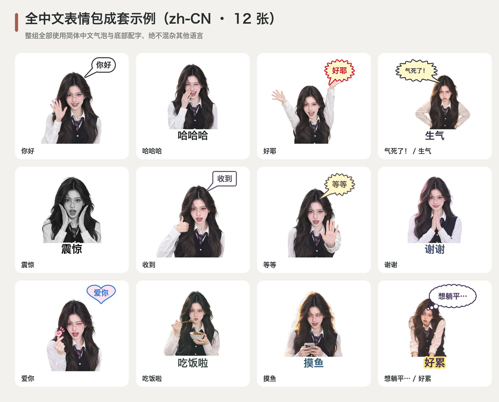
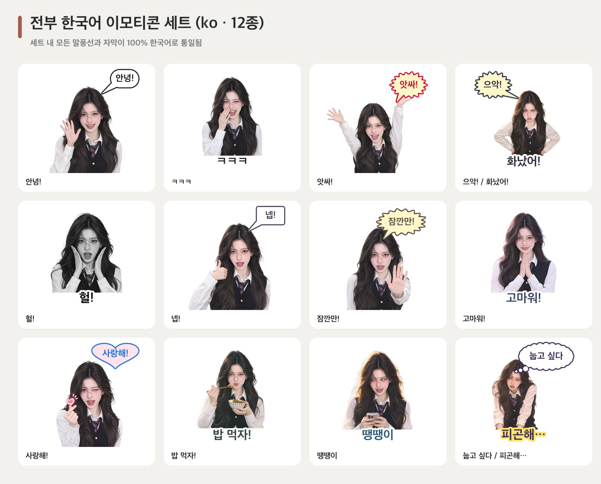
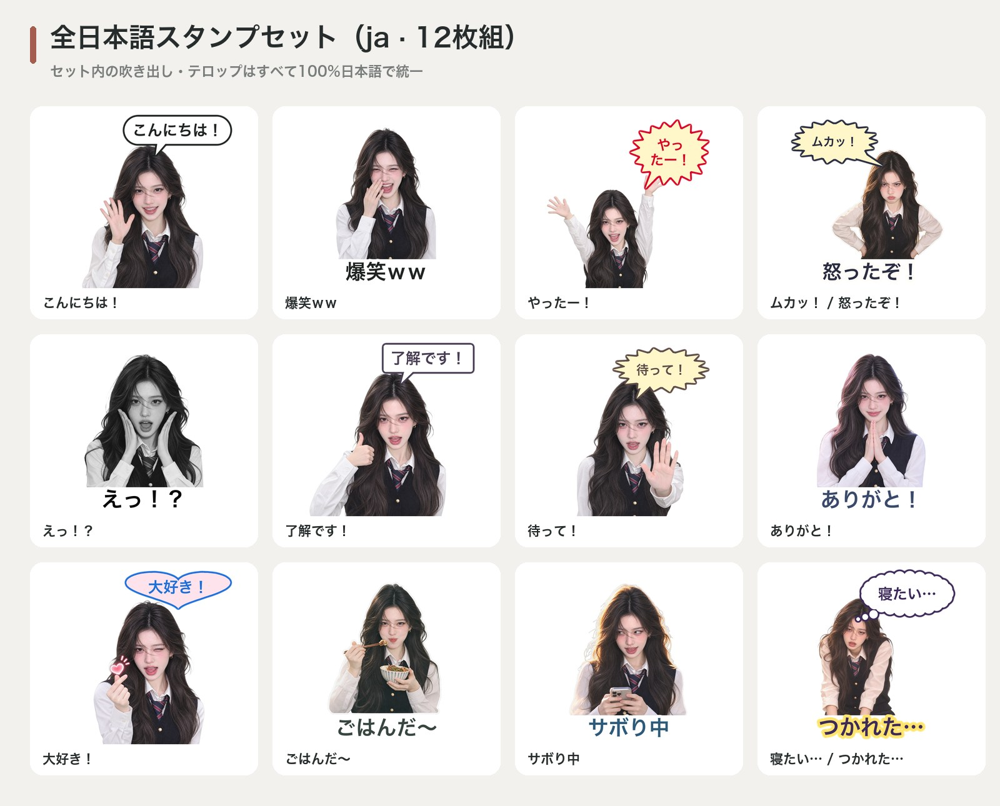
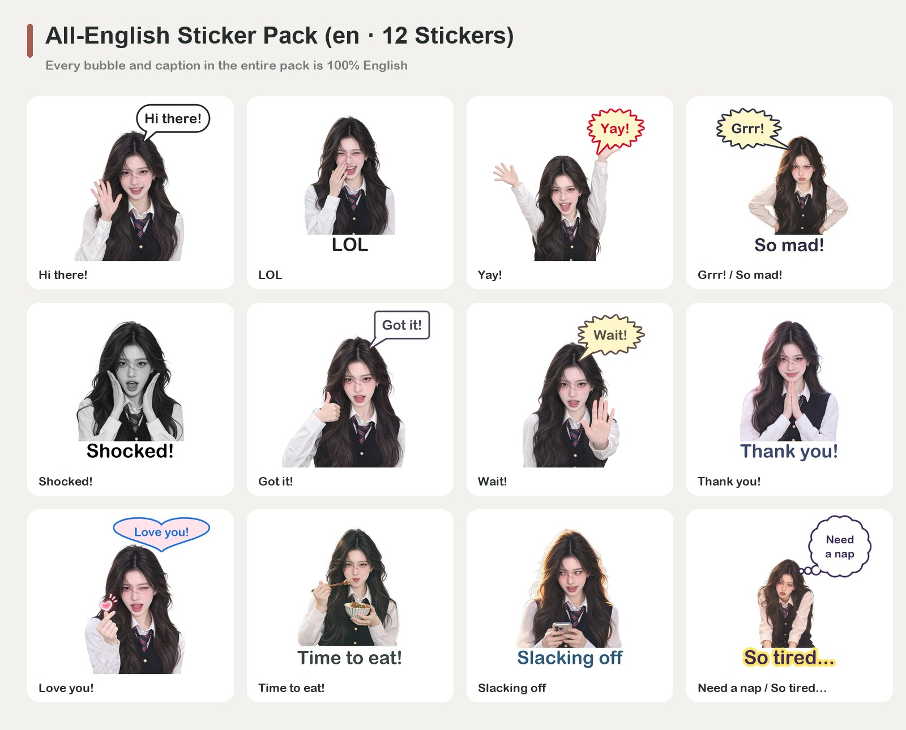

WeChat Real-Person Sticker Studio · 真人表情包工作台
100% 真人五官锁死（拒绝卡通化）· 单张严格单语 · 一次生图直出中/英/日/韩 4 套分语言表情包 + 26 平台规范
108 款真人实拍风格 (通用18/韩30/日30/中30)
168 套双人互动 (闺蜜36/情侣36/百合36/双男主20/冤家20/亲子20)
220 个单人动作 (22大类) + 60 梗图模板
15 套一键主题卡包 · 0成本改字 · 26平台导出
1. 选择模式与预设
2. 一键复制 AI 提示词 (ChatGPT / Gemini / Seedream) 与 CLI 命令
在线真人贴纸排版器 (免安装浏览器直出)
微信聊天背景实时预览
通用 18 款真人风格 (100% English)

韩系真人风格 (100% 한국어)

日系真人风格 (100% 日本語)

中式真人风格 (100% 简体中文)

全中文 12 张成套表情包 (zh-CN)

全韩文 12 张成套表情包 (한국어)

全日文 12 张成套表情包 (日本語)

全英文 12 张成套表情包 (English)
